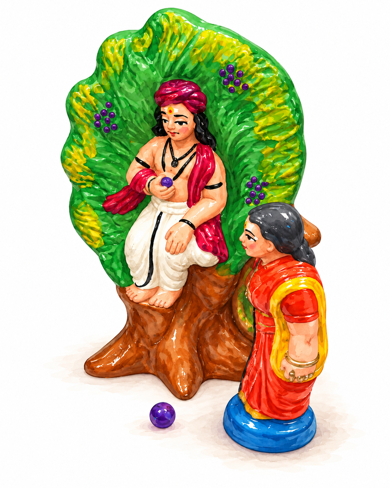

Golu story
Muruga, Avvaiyar, and the Hot Fruit
A playful question beneath a naval tree becomes a lesson in humility and lifelong learning.

Wisdom, wit, and a rest beneath a tree
Avvaiyar was one of Tamil literature’s most celebrated poets, known for her wisdom, wit, and knowledge. But even the wisest people occasionally need a reminder that there’s always more to learn.
According to a popular story, Avvaiyar was travelling on a particularly hot day when she stopped to rest beneath a naval, or jamun, tree. Sitting up in the branches was a young boy, who noticed her looking at the fruit and offered to pick some for her.
He asked her a rather strange question: “Would you like hot fruit or cold fruit?”
Avvaiyar was puzzled. Hot fruit? From a tree? She assumed the boy was being silly and asked for cold fruit.
The boy shook the branch, sending ripe fruits tumbling onto the dusty ground. Avvaiyar picked them up and blew on them to remove the dust.
The boy immediately asked, “Oh! Are the fruits hot? Is that why you’re blowing on them?”
A gentle lesson
Avvaiyar realized she’d been outwitted. The boy is said to have been Lord Muruga, the deity associated with wisdom, courage, and knowledge, appearing in disguise to teach her a lesson. (Side note - Muruga is also the brother of Ganesha, who is also on our display!)
For someone as learned as Avvaiyar, the encounter was a humbling reminder that wisdom isn’t just about how much you know. It’s also about recognizing how much you still have to learn.